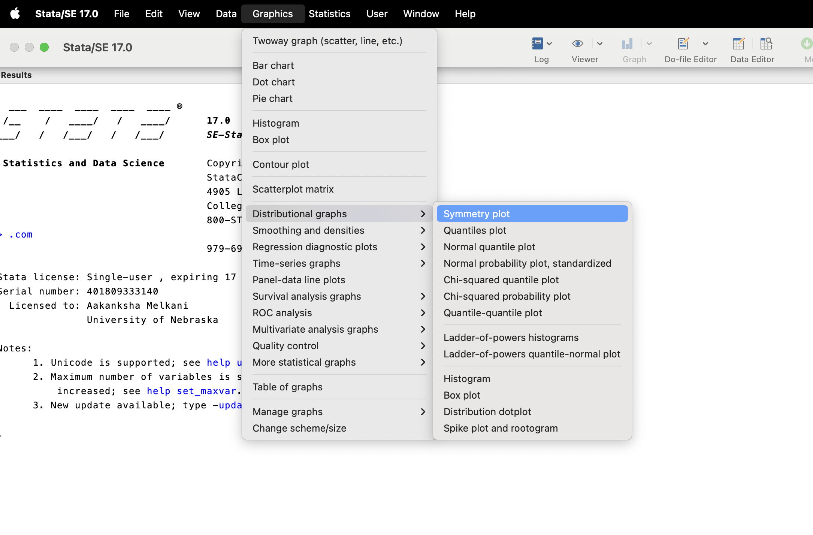

1 Reproducible Research
The goal of this book is to provide guidance on how to conduct research in a fully-automated reproducible manner.
1.1 What is reproducible research
First of all, you may have heard of “reproducibility” and “replicability.” While they sometimes are used interchangeably, they mean different things. Here are commonly used definitions of the two terms (Cacioppo et al. 2015).
- Reproducibility: A research study is reproducible if anybody (including the author of the study) can generate exactly the same results by using the same materials (e.g., data) and procedures used in the study.
- Replicability: A research study is replicable if other teams reach the same conclusion by applying the same procedure to the different materials (e.g., data).
This book focuses only on reproducibility and do not deal with replicability.
What makes a research project reproducible?
Minimum requirement of reproducible research
Every single action taken during the entire research process is documented in a way that anybody can follow to implement the same actions (no hidden actions).
Note that this does not necessarily mean every single action needs to be computer-programmed and automated. Even if you manually delete rows of data on Excel (highly discouraged), this does not make your research non-reproducible as long as this action is recorded and the original data (before deletion of the rows) are provided because anybody can implement this action. Many economists use STATA as their primary software and it provides GUI for creating a figure like below.
Using a GUI like this does not inherently render your research non-reproducible. Provided you give a clear guideline on how to utilize the GUI (along with the dataset), your research remains replicable
It is crucial to distinguish between the quality of data and methodology and the concept of reproducibility. Let’s say a research team omits certain observations they should not have or neglects to include vital independent variables in their regression analysis. Although such oversights might compromise the reliability of their findings, they do not render the research non-reproducible. So long as those steps are documented and the data is accessible, the research can be reproduced. At its core, reproducibility is all about transparency. Indeed, while ensuring reproducibility often improves the quality of results, it is important to understand that low-quality outcomes do not equate to non-reproducibility.
Alston and Rick (2021)
1.2 Why reproducible research?
There are mainly two beneficiaries of reproducible research: yourself (or team) and the scientific community at large.
1.2.1 For yourself (or your team)
In the course of an entire research project, it is almost inevitable that you run the same (or similar) analysis multiple times. For example, suppose your main analysis is running regression. It is not rare that a research project lasts more than 2 years. During that time period, new observations may be available for your analysis. In this case, you need to rerun the same analysis. Suppose you are an academic advisor of a MS student. The student was not able to finish refining the results he/she had for his/her MS thesis for journal publication before she starts working for a different institute (may it be the Ph.D program of a different university or a private company). You have decided that another student takes over his/her work. If the actions the student took were not recorded, the new student may spend considerable amount of time just processing the data so that more sophisticated regression analysis can be run. You may also be finding yourself revisit the work after some years with new sets of research ideas using the same dataset. As long as the data processing procedures are recorded and documented, you can immediately start running analysis on the data without wasting time for data processing.
1.2.2 For the scientific community
Reproducible research provides a change for the entire scientific community to revisit the project and check the reliability of the results. Consequently, it is possible to correct mistakes made by the authors. This correction may even result in different conclusions. This can for example prevent a wrong policy from being implemented by the policy makers. It also avoids subsequent research activities that hinge on the wrong conclusions, avoiding wasting researchers’ time.
1.3 High-quality and low-quality reproducible research
Not all reproducible research project are the same in quality. High-quality reproducible research projects entail the following characteristics:
- streamlined workflow automated by a computer program that are well annotated
- comprehensive documentation (e.g., data and a guidance for reproduction)
- well-organized file system
1.3.1 Automation
As states above as examples, removing rows of data in Excel or producing a figure using a STATA GUI does not inherently render a research project non-reproducible. However, it does elevate the time required for reproduction. Thus, while research projects can be reproducible, they can vary in the ease and efficiency of their reproducibility. The most efficient and easily reproducible project is automated reproducible research.
Definition: automated reproducible research
Automated reproducible research encapsulates every step of the research process within a computer program where possible and ensures all materials, including data and the program itself, are publicly accessible
Where automation is possible depends on the nature of the data and analysis used in the analysis. If it is a simulation analysis where data is generated by a computer program, then it is possible to automate every single step of the research. This is a fully automated reproducible research. Even if you use real-world data, it can be a fully automated research. This is when all the datasets used in the research is publicly available and downloadable through computer programs. For example, you can use PRISM weather dataset (downloadable using the prism package) and county-level corn yield data (downloadable using the tidyusda package) to estimate the impact of temperature and precipitation on corn yield. This research can be made fully reproducible from the very beginning to the end. Many research projects cannot be made fully automated because datasets are often not downloadable using a computer program even if they are publicly accessible online. If you are using data you have collected using paper surveys, then it is simply impossible to automate this process because manual entry of data is necessary.
One thing that is common for all these types of projects is that you can automate everything given the raw data files are stored (no matter how they are obtained).
Important
Automated reproducible research captures every step of the research process within a computer program, starting from the raw data at the very least.
Indeed, this is the focus of this book. Starting from the next chapter, how to develop an automated reproducible project is discussed given the raw data is available and sharable.
Note
When non-sharable confidential data is used, reproducibility of the project is severely compromised. However, all the codes should be made accessible at least. Sometimes coding error can be detected even without running them.
Here are very short list of things I have observed done manually.
- load packages using by checking boxes of packages on the “Packages”
1.4 Why automated reproducible research?
There are multitudes of benefits to reproducibly automated research. Some benefits are for yourself (your team) and others are for the scientific community.
Reproducibility
Automating research through computer programs significantly streamlines the reproducibility of a project. As highlighted in Section 1.1, at a minimum, reproducible research requires comprehensive documentation of all actions taken during a project. When processing data manually in Excel, not only do you have to execute the tasks, but you also need to meticulously document them to ensure reproducibility. Conversely, when using scripts to perform the same tasks, the code itself inherently records your actions. While additional documentation becomes unnecessary, annotating your scripts for clarity is still advisable (though that is a topic for another discussion).
Repeatability
By automating your research, you can save significant amount of time. During a research project, you will likely repeat certain procedures multiple times. For instance, upon receiving new observations, you might need to reanalyze the data. If you processed and analyzed data manually using a GUI and did not save the codes, you would have to restart the entire process. In contrast, if you have coded all procedures, rerunning them is straightforward.
Scientific findings are often conveyed in tables and figures, which are frequently updated throughout research. You might, for example, identify outliers and exclude them from your analysis, necessitating changes in regression results tables. Similarly, reviewers could suggest model adjustments, prompting further updates. Crafting tables and figures manually means redoing them each time changes arise.
Reducing Errors
Computer-automated research can significantly minimize errors commonly associated with manual processes. Take, for instance, referencing a specific statistic from a regression results table in your discussion. If those results change, it is not hard to overlook updating that particular statistic in your narrative. However, by programmatically referencing this figure directly from the table within the document (a feat achievable with tools like R Markdown and QMD), any changes to the results will automatically update the corresponding reference in your discussion. This automation eliminates the risk of manual oversight.
Transferability
As highlighted in Section 1.2, one of the advantages of reproducible research is the seamless transition of project ownership. When the reproducible research is automated, then it is even easier to hand over the leadership of the project to another individual, whether for the continuation of the current project or as the foundation for a new project that builds upon it. If data processing was done manually on Excel, then the new team may need to redo it again, which can be highly time-consuming.
Educational Value